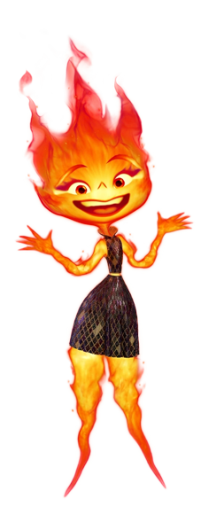
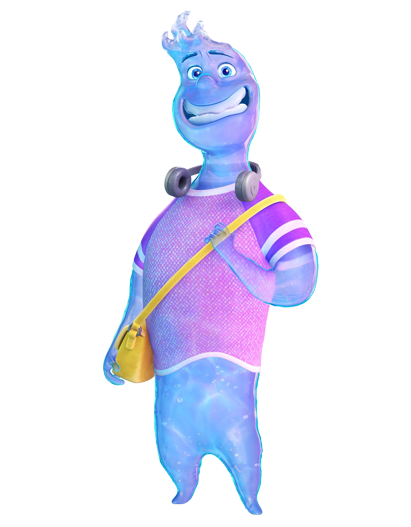

(Эмбер)
Эмбер работает доставщиком продукции и мечтает взять на себя управление семейным бизнесом, когда её отец уйдёт на пенсию, однако ей мешает её вспыльчивость при работе с клиентами...

(Уэйд)
Уэйд и Эмбер проводят время вместе в городе, больше узнают друг о друге и постепенно влюбляются. Уэйд предполагает, что вспыльчивость Эмбер происходит из какого-то другого желания, кроме как завладеть семейной лавкой, но Эмбер отрицает это...